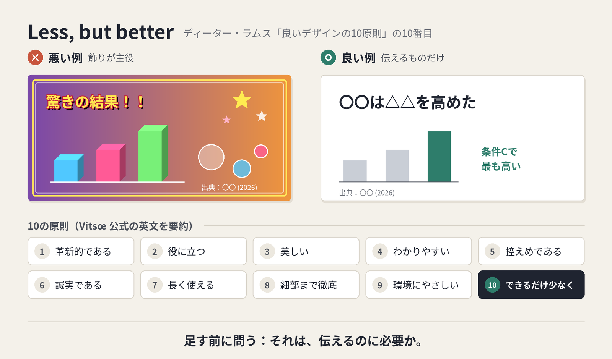

第10回
ディーター・ラムスの「良いデザインの10原則」
Dieter Rams’s Ten Principles for Good Design

どういう知識か
ディーター・ラムスは、ブラウン社の家電や Vitsœ（ヴィツゥ）の家具を手がけたドイツのデザイナーです。Vitsœ によると、ラムスは1970年代の終わり、身の回りが「形と色と音の、見通せない混乱」になっていることを憂い、自分のデザインは良いデザインなのかと問い直しました。その答えが「良いデザインの10原則」です。
良いデザインは、革新的である、役に立つ、美しい、わかりやすい、控えめである、誠実である、長く使える、細部まで徹底している、環境にやさしい、そしてできるだけデザインしない。最後の原則は「Less, but better（より少なく、しかしより良く）」という言葉で知られ、本質に集中し、本質でないものを背負わせないことを指します。
具体例
悪い例：研究発表の結果スライドに、グラデーションの背景、影つきの立体グラフ、飾りの枠や星、目立つ色の見出しを重ねます。飾りは「役に立つ」「わかりやすい」に何も足さず、結果を実際より派手に見せようとする点で「誠実である」からも離れます。
良い例：白い背景に、結論の1文と平らなグラフだけを置き、強調色は1色にします。注目してほしい棒だけに色をつけ、ひとことで意味を添えます。
今日から使えるひとこと
スライドを1枚選び、要素を1つずつ指でかくしてみてください。かくしても伝わる内容が変わらない要素は、ラムスのいう「本質でないもの」です。消すか、小さく薄くします。足したくなったときは「それは、伝えるのに必要か」と先に問います。
出典
- The power of good design（Ten principles for good design） https://www.vitsoe.com/us/about/good-design ラムスが10原則をまとめた経緯と、10原則の英文。日本語の各原則名は英文をもとにした要約です